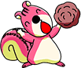

기본 제한시간은 60초 입니다.
정상 포로리를 1명 잡을 때 마다 시간이 1초 추가가 되지만 실수로 보노보노,
노란 포로리를 잡을 시 1초가 감소됩니다. 연속으로 포로리를 잡으면 왼쪽
상단에 조개의 게이지가 채워지는데 포로리를 12마리 연속 잡으면 게이지가
꽉 채워지고 게이지가 가득 찼을 시 기본 획득 점수가 2배 증가합니다. 최고
점수에 도달해 보세요!
매일 약을 올리며 때릴거야? 라고 도발하는 포로리 때문에 화가 많이 난 너부리는 도무지 참지 못해 혼내주기로 마음을 먹었습니다. 이에 순진한 보노보노는 어쩔 줄 모르고 말리지도 못하는데 킹받게 하는 포로리를 혼내 주고 너부리의 복수를 도와주세요!
